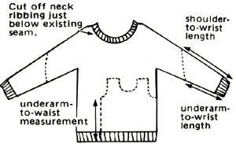

Although Debbie Ward-Jones doesn't drink Coca-Cola, she finds that it's handy to keep a supply of the beverage around her house in Rancho Cordova, California. Deb has discovered that the bubbly liquid is great for cleaning tough stains from such porcelain fixtures as toilets, sinks, and bathtubs!
One evening last winter, as her child lay suffering from a severe upper respiratory ailment, Gwen Thomas found herself in desperate need of a vaporizer, and a search through her kitchen produced a quick and effective solution. The Marengo, Indiana mother poured boiling water into her Crock-Pot and plugged in the low-energy appliance in her young daughter's bedroom. She applied Vicks rub around the top lip of the pot, left the lid off, and set the heating element on "high" .. . and the room's air stayed moist, mild, and lightly scented all night long.
Speaking of dual-purpose appliances: When her family gave up caffeine, Canadian Eileen Palmer put her automatic drip coffeemaker to work in other ways. One day, as she rinsed and drained her alfalfa sprouts-and watched with dismay as many of the little seeds slipped down the drain-it occurred to her that a coffee filter would prevent that loss. Now, the Woss Lake, British Columbian places her seeds in the paper-lined upper portion of her unplugged coffeemaker and filters the rinse water into the pot (for use in soup or for watering houseplants).
Later, Eileen discovered another ingenious use for the system: She fills the top paper filter with fresh, homemade yogurt and allows it to drain overnight (with the pot catching the nutritious whey). In the morning she has a soft and delicious cheese.
When Sandra Price was a little girl she'd help her father every weekend, as he cleaned the church prior to Sunday services. Her job was to sweep the concrete floor in the large basement room that was used for meetings and receptions. Sandra-a MOTHER-reader from King City, California-says her dad would always sprinkle used coffee grounds all over the floor before she swept. The semidamp grains picked up dirt fast, kept dust from flying about as she worked, and made it easy for her to tell where she had swept and what areas were yet to be done. Sandra still uses coffee grounds today . . . to keep her garage and patio floors clean.
Long hard winters are rough on boots. But when Barbara Jones's favorite, warmest snow boots wore down so badly that the soles were slippery, her husband rescued them from early retirement by drilling holes in the bottom of each boot and inserting snow tire studs. He secured the little spikes in place with epoxy, and now-Barbara reports-she can maneuver with complete ease and safety through the ice and snow around their Steamboat Springs, Colorado neighborhood.
If your fruit trees tend to blossom too early in the spring, thereby making themselves vulnerable to late freezes, take a tip from Mrs. Charles Fryar. This reader from Georgetown, Indiana just packs snow, three feet high, around the trunk of each tree ... and then stacks straw around the snow to discourage melting. Thereafter-even though it may feel springlike outdoors-the tree's internal warning signals tell if that the weather is still too cold for blossoming time. (Be sure, of course, to remove the straw and snow when frost danger is over.)
Glen Seaver, Jr. writes-from Grand Junction, Colorado-that his favorite liniment is homemade, costs little, and works better than any other he's ever used. All he does is combine an ounce of rubbing alcohol with 12 five-grain aspirin tablets ... add half an ounce of oil of wintergreen, and shake the mixture well. Glen lets the concoction stand until the aspirin is dissolved, then applies the liniment to his sore muscles. (He cautions that the oil of wintergreen makes the liniment hot if it's rubbed in, so be sure just to pat the soothing remedy on gently.)
When bridling a horse in cold weather, it's always a good idea to warm the bit before attempting to place it in the horse's mouth. Sue Peeler of Pollock, Missouri writes that she takes care of the matter by simply tucking the whole bridle inside her coat while she attends to the grooming of her steed. By the time the animal is brushed, saddled, and cinched, the bit is warm and the bridle straps are flexible enough to be easily fastened.
And here's another "horse sense" idea ... this one from Salem, Oregonian Daniel Gorham. In the winter, Dan ties burlap bags (being careful not to make the binding too tight) on his horse's feet to help prevent the animal from slipping on ice or packed snow. (The burlap also keeps snow from building up under the hoofs.)
K.L. Hollingsworth of Quitman, Mississippi gets his garden seeds to sprout early (and achieves a high germination percentage) when he places newly planted flats on top of the refrigerator in his house. The cooler's motor supplies the level of low heat necessary for the seeds to germinate rapidly.
Although snowdrifts blocking your driveway can be a nuisance, pickup owners can actually turn such problems into assets. Wayne Fugate suggests that, as you shovel your way out of the drive, you load the bed of your light-footed truck with enough snow to provide the extra traction you'll need when navigating icy highways. Then-the Rainelle, West Virginian continues-as the roads clear in intermittent warm spells, the load will also melt, saving you precious gasoline until the next winter storm blows in.
Instead of putting leftover dinner vegetables in the refrigerator (only to be forgotten, all too often, and thrown out two weeks later), Candice Kapets places uneaten veggies in a large container and freezes them. When the plastic box is full of an assortment of goodies, the Ironwood, Michigan reader dumps them all into a pot, adds a bay leaf and some stock (plus whatever other ingredients she has on hand), and creates a super winter soup!
In issue 72, we published a tip from a reader who suggested putting bread dough in a parked car in order to help it rise in cold weather. Well, we've since heard about other good ways of getting that job done.
Linda Harmon-who resides in Green Isle, Minnesota-puts her bowls and pans of dough on her heated waterbed every baking day. Linda says the mattress's constant 85°F temperature is perfect for bread dough ... and the loaves seem to appreciate the warm bed almost as much as she does!
A Ms. Binder-of Port Allegany, Pennsylvania-places towel-covered bowls of bread dough in a still-warm clothes dryer (with the motor off, of course) and finds that the dough rises beautifully. This way, baking and laundry chores can be combined without having to raise the house thermostat.
Moving wood from the woodpile to the house across snowy ground can sometimes be a difficult chore. But up in Wanamingo, Minnesota, Dale Fredrickson made it an easier task by devising a sled from two basement window guards (those pieces of galvanized steel that're often placed around belowground windows in older homes, to keep dirt away). Since the do-it-yourself toboggans are corrugated, it's possible to overlap one on the other, and fasten them together by simply running wire through the precut holes. Then, by attaching one end of a rope to the outer holes in the steel and tying the other end around his waist, Dale has managed to pull full loads over huge drifts.
"When you take down your cut Christmas tree, lean the evergreen against an outside wall or fence," writes Lise Dale of Corrales, New Mexico, "and redecorate the boughs with balls of birdseed, bits of old bread, suet-dipped pine cones, and other treats for winter birds. By the time your feathered friends have finished feasting, the dry tree can simply be laid on its side in an out-of-the-way spot, to provide shelter for squirrels and other small animals."
Cold winds blowing through a drafty house can really inspire wintertime creativity. Pam Wandler was looking for ways to keep her infant son, Orion, warm in their backwoods Idaho home when she ran across some odd-sized woolen sweaters she'd picked up at yard sales the summer before. Cutting them down to his size proved to be easy enough, and Pam's been recycling bargain sweaters for her little ones ever since.
Here's how it's done: First, Ms. Wandler cuts off the neck ribbing just below the seam and sets it aside. Next, she uses one of the child's own shirts as a pattern, to determine the correct size and shape, and cuts the body and sleeves as indicated below. After that, Pam simply turns the mini-sweater inside out and stitches up the open side seam. Then she sews the sleeves on -being careful to adapt the armhole opening to the size of the sleeve-and, finally, replaces (by hand) the salvaged neck ribbing. She now has an affordable 100% wool child's sweater.
Reader Jim Burnell creates his own handy little cookers to take along on camping trips or backpacking expeditions. Jim takes an empty tuna can, cleans it thoroughly, then cuts a strip of cardboard 1-1/2" wide and about 24" long. He tightly rolls that cardboard strip, inserts it in the can, and sets a cardboard wick in the center of the container. Next, the resident of Corning, California pours melted paraffin over the cardboard coil, filling the can up to 1/4" from the top. After the wax sets, Jim stores the little stove in his backpack . . . and it's ready to provide long-lasting heat at the touch of a match.
OK. Now it's YOUR turn! We've all come up with some practical, down-home, time-tested solutions to the frustrating little problems that bug us every day. Let's hear YOUR best "horse sense" ideas so we can share 'em and all benefit.
Send your pointers to Down-Home Country Lore, P.O. Box 70, Hendersonville, North Carolina 28791, and I'll make sure that the most useful of the suggestions will appear in upcoming editions. A one-year subscription-or a oneyear extension of an existing subscription-will then be sent to each contributor whose tip does get printed in this column.-MOTHER.
|
 |
|
|